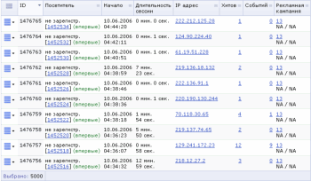
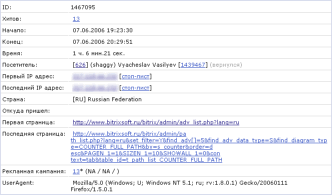

Данная форма отображает сессии посетителей сайта.
Моментом начала сессии в системе 1С-Битрикс: Управление сайтом признается:
- открытие сайта в окне браузера;
- авторизация посетителя;
- окончание авторизации посетителя (закрывается текущая сессия и сразу же открывается новая).
Моментом окончания сессии признается:
- закрытие окна браузера;
- окончание авторизации посетителя (закрывается текущая сессия).
Формально сессией можно считать один заход посетителя на сайт.
Фильтр
| Параметр | Описание |
|---|---|
| ID, логин, имя, фамилия* | Позволяет отобрать зарегистрированных посетителей по маске их строк логина, имени, фамилия или ID. |
| ID сессии* | Маска идентификатора требуемых сессий. |
| Дата начала | Интервал для отбора сессий по дате начала сессии. |
| Дата окончания | Интервал для отбора сессий по дате окончания сессии. |
| ID посетителя* | Позволяет отобрать сессии по маске ID посетителей сайта. |
| Зарегистрирован | Определяет, отображать ли только сессии зарегистрированных посетителей, незарегистрированных или всех. |
| Впервые/вернулся | Флаг, позволяющий отфильтровать сессии посетителей, впервые посетивших сайт либо вернувшихся на сайт. |
| Добавил в избранное | Флаг, позволяющий отфильтровать сессии, в течении которых посетитель добавил сайт в избранное. |
| IP адрес* | Маска IP адреса искомых посетителей. |
| UserAgent* | Маска UserAgent’ов искомых посетителей. |
| Страна* | Позволяет отобрать сессии по стране посетителя (определяется по IP адресу). В квадратных скобках можно ввести двухсимвольную аббревиатуру страны (напр., RU, BY, US). |
| Попал в стоп-лист | Флаг, позволяющий отфильтровать сессии посетителей, которые были добавлены в стоп-лист. |
| ID записи стоп-листа | Позволяет отобрать сессии заблокированных пользователей по маске идентификатора записи в стоп-листе. |
| Хитов | Интервал для отбора сессий по количеству страниц (хитов), загруженных в течении сессии. |
| Событий | Интервал для отбора сессий по количеству событий, инициированных в течении сессии. |
| Пришел по рекламной кампании | Флаг, позволяющий отфильтровать сессии посетителей, сделавших прямой заход, либо возврат по рекламной кампании. |
| ID рекламной кампании* | Маска ID рекламной кампании при поиске по предыдущему полю. |
| referer1/referer2* | Идентификаторы рекламной кампании – referer1, referer2 (при поиске по полю Пришел по рекламной кампании). |
| referer3* | Дополнительный параметр при заходе по рекламной кампании – referer3 (при поиске по полю Пришел по рекламной кампании). |
| Возврат по рекламной кампании | Флаг, позволяющий отфильтровать сессии посетителей или на прямом заходе по рекламной кампании, или на возврате (при поиске по полю Пришел по рекламной кампании). |
| Первая страница | Позволяет отфильтровать сессии посетителей по первой
просмотренной странице и сайту. В выпадающем списке (ошибка 404) можно указать, отображать ли только запросы несуществующих страниц. |
| Последняя страница | То же, но для фильтрации по последним страницам сессий. |
| Логика между полями | Переключатель, определяющий механизм поиска записей.
|
* - для данных полей вы можете воспользоваться специальными логическими выражениями.
Для того чтобы установить фильтр по заданным критериям поиска, нажмите кнопку Найти. Для отображения всех сессий нажмите кнопку Отменить.
Контекстная панель
| Кнопка | Описание |
|---|---|
| Excel | Экспортирует данные из отображаемой таблицы в формат MS Excel. |
| Настроить | Позволяет перейти к диалогу настройки внешнего вида отчетной формы. |
Таблица
| Колонка | Описание |
|---|---|
| Меню действий |
Нажатие на кнопку действий в строке конкретной сессии отображает меню, содержащее команды:
|
| ID | ID сессии в базе (ваша собственная сессия отмечена красным). |
| Посетитель | Если посетитель зарегистрирован, данные в формате:
|
| Начало | Время начала сессии. |
| Длительность | Длительность сессии. |
| IP адрес | IP адрес посетителя. Ссылка на значении открывает страницу поиска информации по этому адресу (http://www.whois.sc/IP ). |
| Хитов | Количество страниц (хитов), просмотренных в течении сессии. Ссылка на показателе открывает список хитов с фильтром, установленным на ID сессии. |
| Событий | Количество событий, инициированных в течении сессии. Ссылка на показателе открывает список событий с фильтром, установленным на ID сессии. |
| Рекламная кампания | В случае, если посетитель сделал прямой заход либо возврат по рекламной кампании, в данном столбце выводятся: ID рекламной кампании, referer1/referer2/referer3. Ссылка на ID кампании открывает список кампаний с фильтром, установленным на эту кампанию. |
| Выбрано | Количество сессий, выбранных из базы данных. |
Пример таблицы
Нажмите на рисунок, чтобы увеличить
Подробный просмотр сессии
| Поле | Описание |
|---|---|
| ID | ID сессии в базе. |
| Хитов | Количество просмотренных страниц. |
| Начало | Время начала сессии. |
| Конец | Время окончания сессии (время последнего хита). |
| Время | Длительность сессии. |
| Посетитель | Данные посетителя. |
| Первый IP-адрес | IP адрес посетителя при открытии сессии. |
| Последний IP-адрес | Последний IP адрес посетителя (на момент закрытия сессии). |
| Страна | Страна посетителя. |
| Откуда пришел | Страница, с которой пришел посетитель в момент открытия сессии. |
| Первая страница | Страница, на которую пришел посетитель в момент открытия сессии. |
| Последняя страница | Последняя страница, просмотренная в данной сессии. |
| Рекламная кампания | Если был прямой заход либо возврат по рекламной кампании, в данном поле отображены данные по рекламной кампании: [ID] referer1 / referer2 / referer3 (возврат - символ *). |
| UserAgent | UserAgent посетителя. |
Пример отчета по сессии
Нажмите на рисунок, чтобы увеличить
| © «Битрикс», 2001-2008, «1C-Битрикс», 2008 | 1С-Битрикс: Управление сайтом |